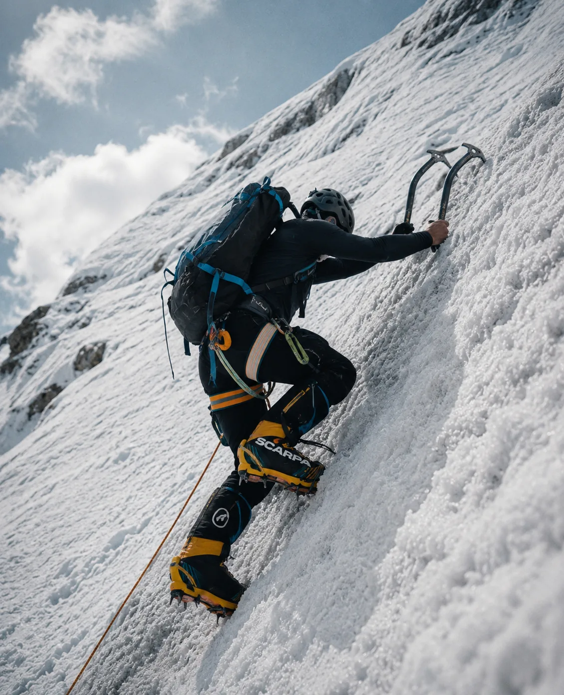
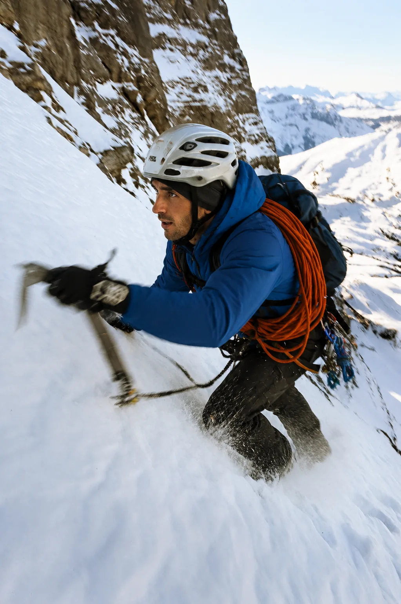
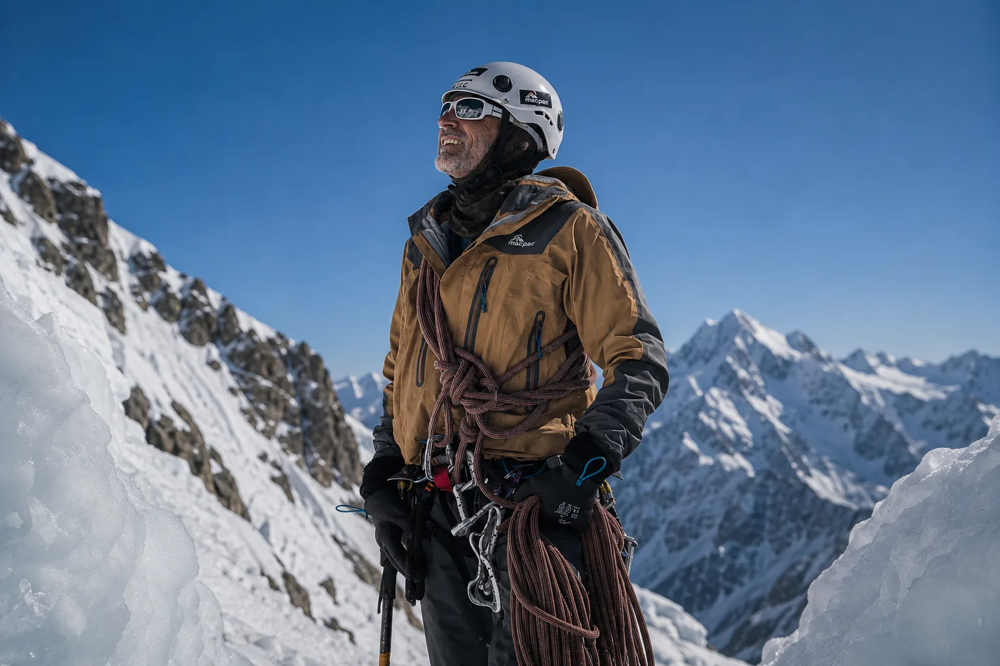
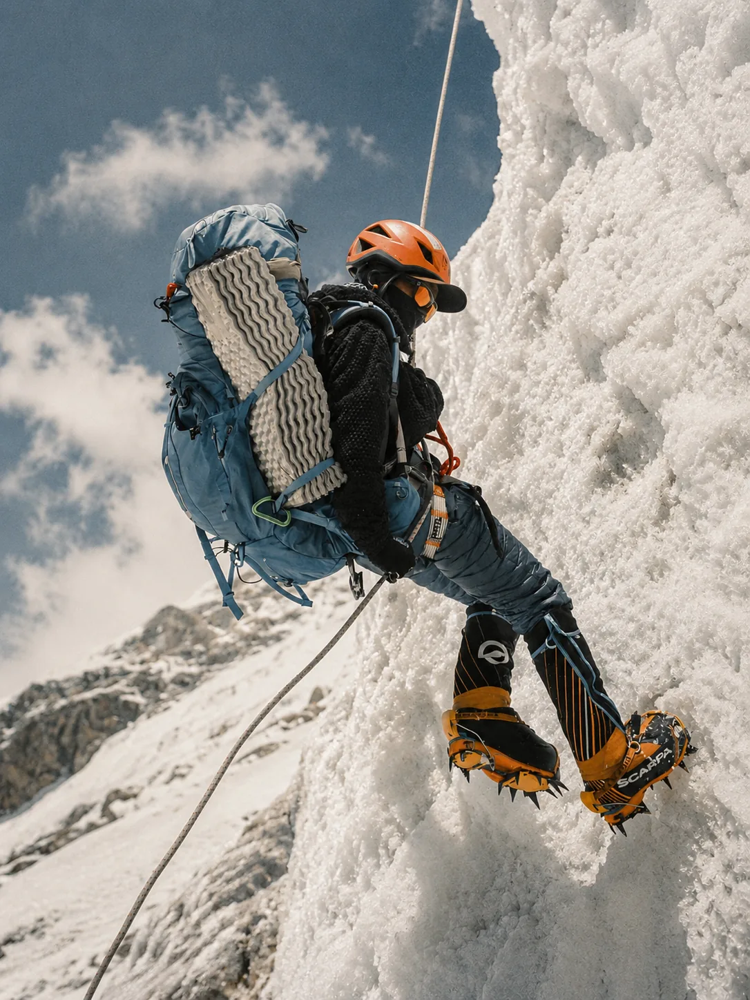
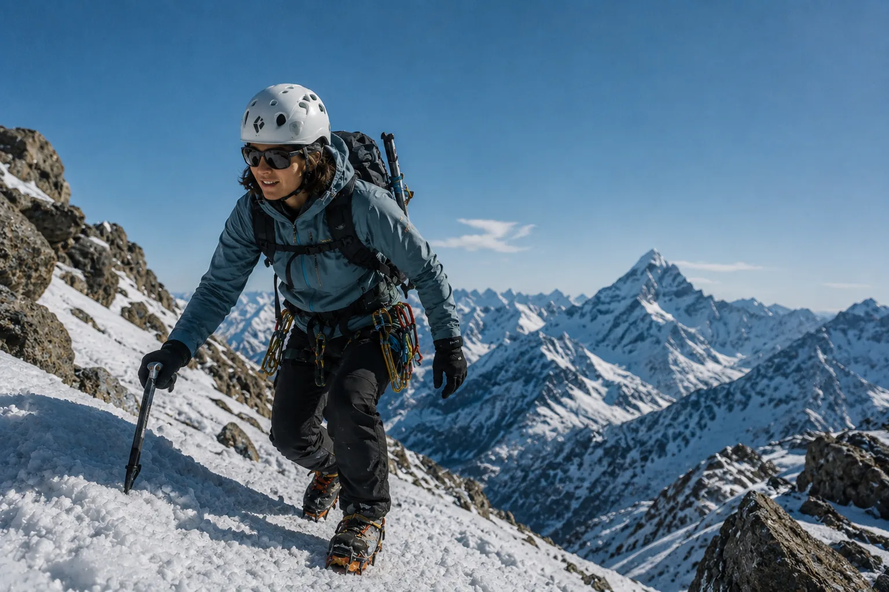
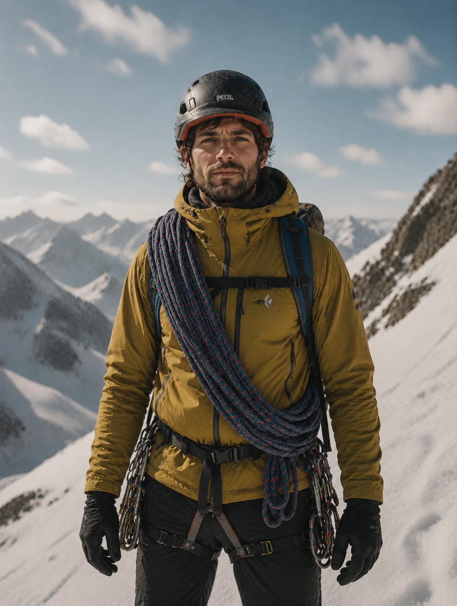
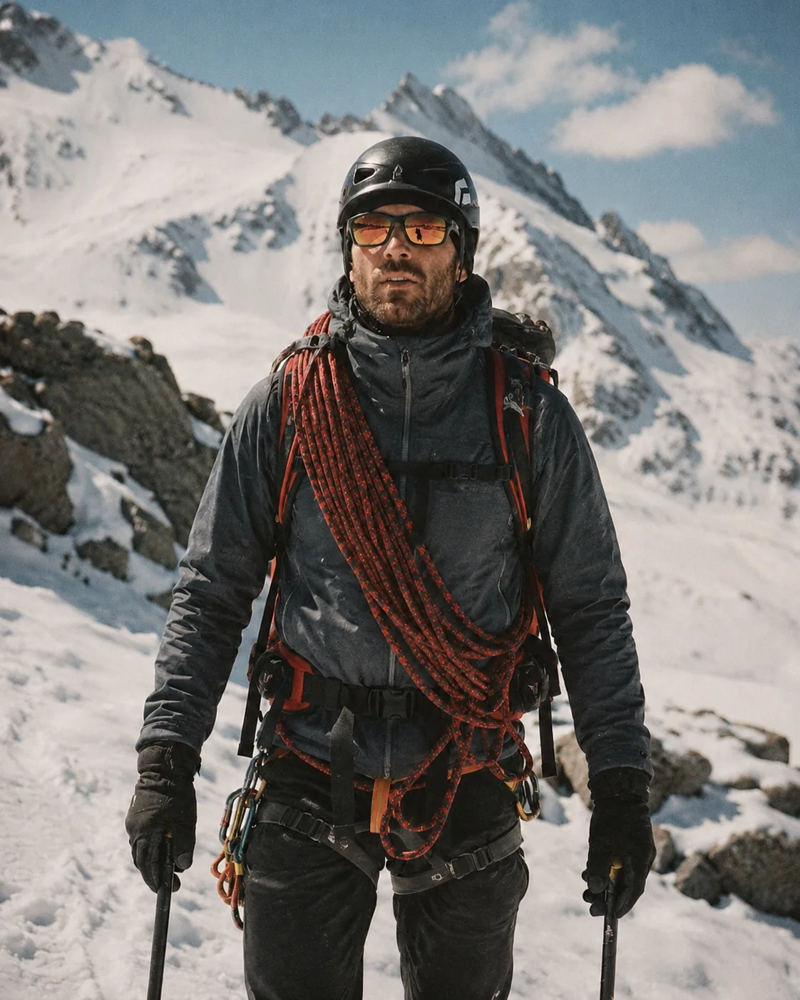
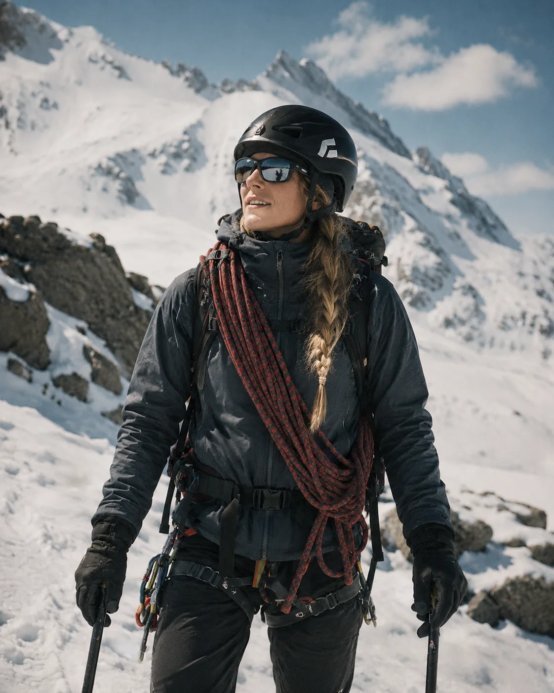

La altura
se gana.
El límite
se entrena.
Expediciones y formación técnica para personas preparadas. Seguridad, criterio y entrenamiento real antes de pisar la nieve.
Nuestra forma de subir
La montaña empieza mucho antes del ascenso.
Exigencia real, grupos reducidos y protocolos de decisión.
Cúspides prepara a cada participante durante meses: condición física, lectura de terreno, criterio técnico y adaptación mental para entornos donde improvisar no es una opción.
Diseñamos experiencias que filtran por compromiso. Si buscás postal fácil, no es acá. Si buscás transformarte, empezá.



Cúspides en números
Método Cúspides
Cuatro etapas para llegar preparado.
Un recorrido progresivo que ordena cada curso: primero entendemos tu punto de partida, después entrenamos, simulamos y finalmente salimos a la montaña.
Evaluación
Chequeo físico, experiencia previa y objetivos reales antes de definir el recorrido.
Entrenamiento
Preparación técnica, fuerza, resistencia y criterio de seguridad para alta montaña.
Simulación
Prácticas controladas con equipo, protocolos y toma de decisiones en terreno.
Expedición
Salida real con acompañamiento profesional, logística y lectura continua del entorno.
Expediciones destacadas
Objetivos reales para personas preparadas.
Campo de Hielo Sur
Ruta glaciar avanzadaOrientación, cuerda y gestión de grietas en una travesía exigente.Ver más


Expediciones
Elegí tu expedición.
Formación y salidas técnicas para entrenar criterio, seguridad y progresión en alta montaña.
 Nivel experto
Nivel expertoEscalada en hielo
Anclajes, crampones y lectura del hielo para terreno patagónico técnico.
Avanzado
Travesía glaciar
Cuerda, detección de grietas y decisiones seguras para moverse en glaciar.
Técnico
Cumbre segura
Planificación, administración de energía y descenso seguro en alta montaña.
AvanzadoRescate en grietas
Sistemas de poleas, autorrescate y protocolos para equipos encordados.
Técnico
Clima y ruta
Lectura meteorológica, elección de ventana y armado de ruta segura.
Postales de alta montaña.
Guías verificados
Staff técnico interdisciplinario.
Guías de montaña, preparadores físicos y especialistas que acompañan cada proceso.

Tomás Aranda
Guía IFMGA · Rescate en grietas
Valentina Ríos
Preparación física · Altura

Bruno Kaplan
Técnica glaciar · Seguridad

Lucía Bianchi
Nutrición deportiva · Expedición
Testimonios
Lo que otros dicen sobre esta aventura.
Lilian
★★★★★
Una de las mejores experiencias al aire libre que viví. La vista superó cualquier expectativa.
Leer másRichard Vernon
★★★★★
Excelente planificación, tiempos claros y muy buena orientación técnica. Se priorizó la seguridad.
Leer másFran Rogers
★★★★★
La aventura fue increíble, con formación útil y paisajes que no se olvidan.
Leer másCamila R.
★★★★★
La preparación previa marcó la diferencia. El equipo fue serio, humano y atento.
Leer másMateo L.
★★★★★
Sentí aventura extrema, pero nunca improvisación. Todo estaba pensado con respeto.
Leer másLilian
★★★★★
Una de las mejores experiencias al aire libre que viví. La vista superó cualquier expectativa.
Leer másRichard Vernon
★★★★★
Excelente planificación, tiempos claros y muy buena orientación técnica. Se priorizó la seguridad.
Leer másFran Rogers
★★★★★
La aventura fue increíble, con formación útil y paisajes que no se olvidan.
Leer másCamila R.
★★★★★
La preparación previa marcó la diferencia. El equipo fue serio, humano y atento.
Leer másMateo L.
★★★★★
Sentí aventura extrema, pero nunca improvisación. Todo estaba pensado con respeto.
Leer másEscuela 2027
Entrená para lo extraordinario.
Programas de formación, rescate en grietas, primeros auxilios agrestes y progresión glaciar. Un espacio para quienes quieren convertirse en montañistas técnicos.
Rescate en grietasPrimeros auxiliosNavegaciónProgresión glaciar
Quiero recibir novedades2027Apertura de cohortes
4especializaciones técnicas
HIELOROCAALTURACUERDAGLACIARVIENTOCUMBRERESCATEACLIMATACIÓNPIOLET
HIELOROCAALTURACUERDAGLACIARVIENTOCUMBRERESCATEACLIMATACIÓNPIOLET
Cosas que debés saber
Guía certificado, planificación previa, asesoramiento de equipo y briefing de seguridad.
No. Cúspides está pensado para personas con experiencia, compromiso físico y voluntad de preparación previa.
Recibís una evaluación inicial, lista de equipo, calendario de preparación y contacto del equipo técnico.
Ropa técnica por capas, botas adecuadas, protección, hidratación y el material específico de cada ruta.
Contacto
Empezá a planear tu próxima cumbre.
Contanos tu experiencia, objetivo y fechas tentativas. Te respondemos con una recomendación clara para avanzar.